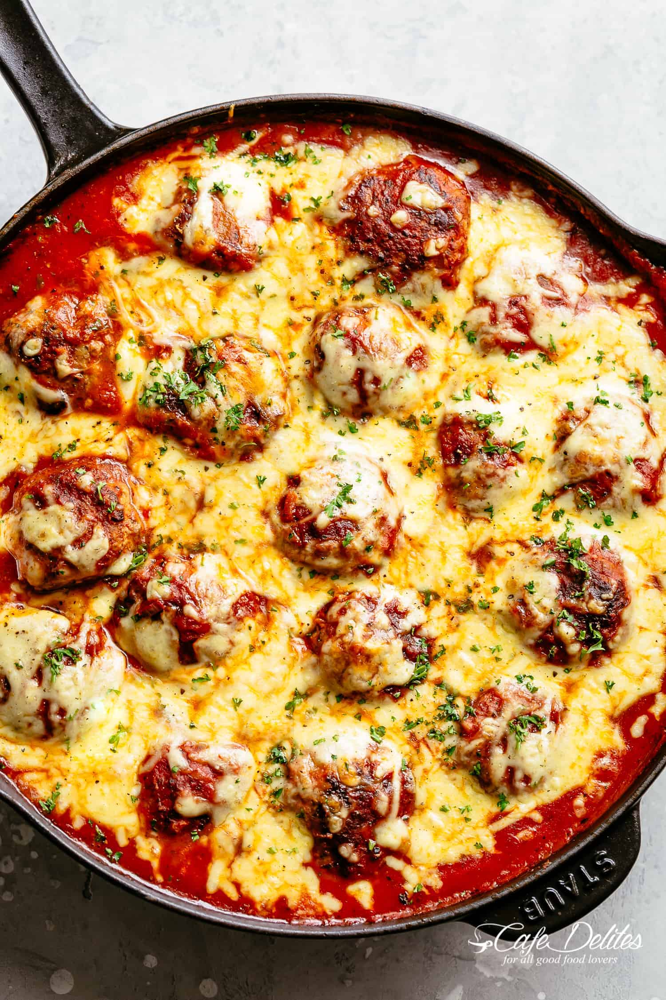

Chessy Meatballs

Description
The best meatball recipe starts with the most tender meatballs, browned in a hot skillet to seal in the juices and get crispy, golden edges.
Soaking up rustic tomato sauce flavours underneath a golden blanket of melted mozzarella cheese, Cheesy Meatballs is an easy dinner recipe that will be a hit with your family!
Ingredients
Meatballs:
- 3 slices white bread crust removed
- 1/2 cup milk
- 17 oz (500 g) ground beef (or minced beef)
- 17 oz (500 g) ground pork (minced pork)*
- 1 onion finely chopped
- 4 garlic cloves minced
- 2 egg
- 1/2 cup fresh grated parmesan cheese
- 1 teaspoon each dried basil and oregano
- 1/4 cup fresh parsley finely chopped
- 1 teaspoon beef bouillon powder (or vegetable stock powder)
- 1 teaspoon salt to taste
- cracked black pepper, to taste
Tomato Sauce:
- 2 tablespoons olive oil divided
- 1 large onion finely chopped
- 4 garlic cloves minced
- 24 oz (700-gram) bottle of tomato sauce (puree or passata)
- 1/4 cup water
- 2 tablespoons tomato paste
- 2 teaspoons each of dried basil and oregano
- 1 teaspoon red chili flakes (optional)
- salt and pepper to taste
- 1/4-1/2 teaspoon sugar (optional)
- 1 1/2 cups shredded mozzarella cheese
- fresh basil or parsley chopped to garnish
Step By Step
- PREHEAT oven grill on medium high heat, or main oven to 430°F (220°C).
- Combine bread and milk in a large bowl. Press the bread down into the milk to fully submerse and soak into the bread. Set aside.
- While the bread is soaking, get all of your meatball ingredients chopped and ready. Add all of the meatball ingredients in the bowl with the soaked bread and mix well.
- Roll about three tablespoons worth of meat mixture into a ball. Set aside onto a plate and repeat until all meat is used.
- Heat one tablespoon of olive oil in a large well-seasoned skillet or non stick pan over medium high heat. Brown the meatballs on all sides until golden (they won't be cooked all the way through, but you will finish them off in the sauce). Transfer to a warm plate.
- Heat the remaining tablespoon of olive oil in the pan. Fry the onion until transparent (about 2 minutes), while stirring occasionally. Add in the garlic and sauté for 1 minute until fragrant.
- Stir through the puree (or passata), water, tomato paste, herbs, chili flakes (if using), salt and pepper. Mix together well with a wooden spoon; bring to a simmer. Reduce heat down to low and taste test. Add in the sugar if needed.
- Transfer the meatballs back into the sauce, along with any juices released from the meatballs on the plate.
- Cover and cook for 20 minutes, while stirring the sauce occasionally, until meatballs are cooked through. (Turn the meatballs a couple of times in the sauce while cooking.)
- Top with the mozzarella cheese; transfer to the oven and grill or bake on the middle shelf of your oven, until the cheese has melted and is bubbling.
- Garnish with the freshly chopped parsley and extra dried oregano and/or basil. Serve over pasta, mashed potatoes or rice.